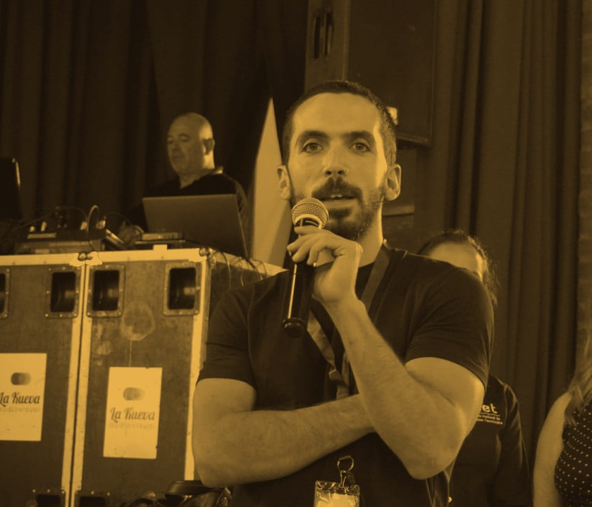

Sociólogo por la Universidad de Buenos Aires. Docente, investigador y consultor en educación y formación técnico profesional.
Sostener un grupo durante un tiempo compartido —una sala, una pista, un aula— es el oficio que atraviesa todo lo que hace. Ver la parte de música →

Integrante del equipo de investigación en formación docente de la UNIPE.
Desde 2011, consultor en organismos nacionales, jurisdiccionales e internacionales, y hace más de una década en las redes federales de Educación y Formación Técnico Profesional.